방재기사 (2022-04-24 기출문제)
1과목: 재난관리
1. 재난 및 안전관리 기본법령상 분야별 국가핵심기반시설의 분류가 아닌 것은?
- 환경
- 에너지
- 원자력
- 국외민간시설
(정답률: 알수없음)

2. 재난 및 안전관리 기본법령상 특별재난 지역에관한 설명으로 ( )에 알맞은 내용은?
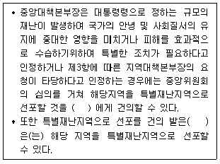
- 대통령
- 국무총리
- 행정안전부장관
- 재난관리책임기관장
(정답률: 알수없음)
3. 재난 및 안전관리 기본법령상 안전정책조정위원회에서 수행하는 사무가 아닌 것은? (단, 그밖에 중앙안전관리위원회가 위임한 사항은 제외한다.)
- 재난 및 안전관리기술 종합계획의 심의
- 국가핵심기반의 지정에 관한사항의심의
- 지역재난안전대책본부의 연차계획수립 검토
- 국가안전관리기본계획에 따라 그소관업무에 관한 집행계획의 심의
(정답률: 알수없음)
4. 재난 및 안전관리 기본법령상 재난의 대응 활동에 해당하는 것은?
- 안전점검
- 위기경보의 발령
- 긴급통신수단확보
- 특별재난지역선포
(정답률: 알수없음)
5. 재난피해 경감을 위한 구조적 완화 조치 해당되지 않는 것은?
- 제방 증축
- 다목점 댐의 건설
- 자연재해손실 보상보험 가입
- 개인 주택의 역학적 내력 증대
(정답률: 알수없음)
6. 재난 및 안전관리 기본법령상 지역재난안전대책본부에 관한 사항으로 틀린 것은?
- 시∙군∙구대책본부의 장은 재난현장의 총괄∙조정 및 지원을위하여 재난현장 통합지원본부를 설치∙운영할수 없다.
- 시∙도대책본부 또는 시∙군∙구대책본부의 본부장은 시∙도지사 또는 시장∙군수∙구청장이 된다.
- 지역대책본부장은 지역대책본부의 업무를 총괄하고 필요하다고 인정하면 지역재난 안전대책본부회의를 소집할수있다.
- 재난현장 통합지원본부의 장은 관할 시∙군∙구의 부단체장이 되며,실무반을 편성하여 운영할 수 있다.
(정답률: 알수없음)
7. 자연재해대책법령상 방재관리대책대행자가 대행하게 할수 있는 업무를 모두고른 것은?
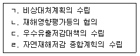
- ㄱ, ㄹ
- ㄱ, ㄴ, ㄷ
- ㄴ, ㄷ, ㄹ
- ㄱ, ㄴ, ㄷ, ㄹ
(정답률: 알수없음)
8. 저수지∙댐의 안전관리 및 재해예방에 관한 법률 시행령상 비상대처계획을 수립하여야하는 저수지∙댐의 종류 및 규모에 관한 사항으로 ( )에 알맞은 기준은?
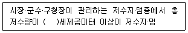
- 15만
- 20만
- 25만
- 30만
(정답률: 알수없음)
9. 재난 및 안전관리 기본법령상 위기경보 발령에 관한 설명으로 틀린 것은? (단, 기타 법령에 관한 사항은 제외한다.)
- 위기경보는 관심∙주의∙경계∙심각으로 구분할 수 있다.
- 재난관리주관기관의 장은 긴급한 경우라도 심각경보를 발령 또는 해제하기전 행정안전부장관과 사전에 협의하여야한다.
- 재난관리주관기관의 장은 재난발생이 예상되는 경우에는 그 위험수준,발생가능성등을 판단하여 위기경보를 발령할수있다.
- 재난관리책임기관의장은 위기경보가 시 신속하게 발령될 수 있도록 재난과 관련한 위험정보를 얻으면 즉시 행정안전부장관,재난관리주관기관의 장, 시∙도지사 및 시장∙군수∙구청장에게 통보하여야 한다.
(정답률: 알수없음)
10. 저수지∙댐의 안전관리 및 재해예방에 관한 법률 시행령상 재해위험 저수지∙댐으로 지정할수 없는 것은?
- 댐의 상류지역에서 산사태 발생 우려가있는 댐
- 저수지에 퇴적물이 축적되어 홍수 대응능력이 부족하여 재해가 우려되는 저수지
- 시설물의 안전 및 유지관에 관한 특별법령에 따른 정밀안전진단 결과 E등겁(불량) 판정을 받은 댐
- 수문학적 안전성이 부족하여 시설물의 안전 및 유지관리에 관한 특별법령에 따른 D등급 판정을 받은 댐 중에서 치수 능력을 증대하기 위한 사업이 진행중인 댐
(정답률: 알수없음)
11. 자연재해대책법령상 비상대처계획에 포함되어야할 사항을 모두 고른 것은?
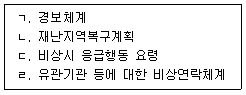
- ㄱ, ㄴ
- ㄱ, ㄷ, ㄹ
- ㄴ, ㄷ, ㄹ
- ㄱ, ㄴ, ㄷ, ㄹ
(정답률: 알수없음)
12. 2002년 태풍 “루사”가 한번도에 상륙했던 당시 강원도 심석천에 시간당100mm의 집중호우가 발생하였다. 심석천의 면적은 36km2이고 유출계수는 0.4라고 가정할 때 합리식에 따른 유역출구에서의 첨두유량(m3/s)의 값은?
- 100
- 200
- 300
- 400
(정답률: 알수없음)
13. 재난 및 안전관리 기본법령상 자연재난을 모두 고른 것은?
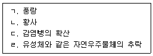
- ㄱ, ㄴ, ㄷ
- ㄱ, ㄴ, ㄹ
- ㄱ, ㄷ, ㄹ
- ㄴ, ㄷ, ㄹ
(정답률: 알수없음)
14. 재난 및 안전관리 기본법령상 다음에서 설명하는 것은?
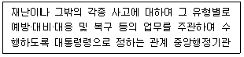
- 긴급구조기관
- 긴급구조지원기관
- 재난관리주관기관
- 재난정보관리기관
(정답률: 알수없음)
15. 재난 및 안전관리 기본법령상 국가안전관리 기본계획에 관한 사항으로 ( )알맞는 내용은?
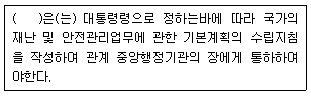
- 국무총리
- 시∙도지사
- 행정안전부 장관
- 중앙행정기관의 장
(정답률: 알수없음)
16. 재난 및 안전관리 기본법령상 재난대비훈련 기본계획 수립주기는?
- 6개월
- 1년
- 2년
- 3년
(정답률: 알수없음)
17. 자연재해대책법령상 홍수,호우 등으로부터 재해를 예방하기 위한 방재정책에 적용하기 위하여 처리가능한 시간당 강우량 및 연속강우량의 목표를 지역별로 설정∙운용할수 있도록 한 기준은?
- 수방기준
- 방재기준
- 지역별 방재성능목표
- 지구단위 홍수방어기준
(정답률: 알수없음)
18. 재난 및 안전관리 기본법령상 다음의 재난 및 사고유형의 재난관리 주관기관은?
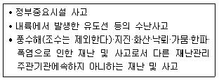
- 국방부
- 행정안전부
- 산업통상자원부
- 농림축산식품부
(정답률: 알수없음)
19. 자연재해대책법령상 중앙대책본부장이 지구단위종합복구계획을 수립할 수 있는 지역이 아닌 것은?
- 도로∙하천등의 시설물에 복합적으로 피해가 발생하여 시설물별 복구보다는 일괄복구가 필요한 지역
- 산사태 또는 토석류로 인하여 하천유로 변경등이 발생한지역으로서 근원적 복구가 필요한지역
- 복구사업을 위하여 국가 차원의 신속하고 전문인적인 인력∙기술력등의 지원이 필요하다고 인정되는지역
- 피해재발방지를 위하여 피해지역 전체를 조망한 예방∙정비보다는 조속한 단위시설물의 기능복원이 필요하다고 인정되는 지역
(정답률: 알수없음)
20. 재난 및 안전관리 기본법령상 재난사태 선포와 관련한 내용으로 ( )에 알맞은 내용은?
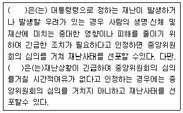
- 시∙도지사
- 행정안전부장관
- 중앙위원회의 장
- 지방자치단체의 장
(정답률: 알수없음)
2과목: 방재시설
21. 해안(해일)재해 방지를 위한 방파제 설계시 고려사항과 거리가 가장 먼 것은?
- 조위
- 선박항행조건
- 파랑
- 방파제 너비
(정답률: 알수없음)
22. 자연재해저감 종합계획 세부수립기준상 기상현황에 관한 조사사항으로 틀린 것은?
- 강우는 연도별∙월별 수문기상 개황을 조사한다.
- 바람은 풍향과 풍속에 대해 평균치 및 연평균 증발량을 조사한다.
- 태풍은 주경로 및 내습빈도 등 현황을 조사한다.
- 가뭄은 연도별∙월별 강우량, 지하수 분포 및 부존량 현황을 조사한다.
(정답률: 알수없음)
23. 제방 붕괴의 원인이 아닌 것은?
- 퇴적
- 월류
- 비탈면 활동
- 파이핑 현상
(정답률: 알수없음)
24. 자연재해대책법령상 자연재해저감 종합계획의 수립에 관한 사항으로 ( )에 알맞은 내용은?
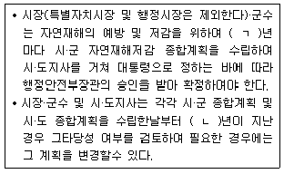
- ㄱ:5년, ㄴ:5년
- ㄱ:5년, ㄴ:10년
- ㄱ:10년, ㄴ:5년
- ㄱ:10년, ㄴ:10년
(정답률: 알수없음)
25. 자연재해저감 종합계획 세부수립기준상 인문현황에 관한 사항으로 틀린 것은?
- 인문현황에는 인구현황, 산업현황, 문화재현황 등을 기술한다.
- 인구현황 조사중 재해취약인구는 만18세 미만의 청소년과 만65세 이상의 노인을 포함한다.
- 산업현황은 산업체의 현황 및 분포를 제시하여 인명피해 및 재산피해 예상 활용한다.
- 인문현황 조사는 자연재해 발생원인과 피해규모에 영향을 미치는 인문적인 요인을 조사∙분석하여 위험지구 선정 및 저감대책 수립의 기초자료로 활용할수있도록 수행되어야한다.
(정답률: 알수없음)
26. 방재시설 피해현장 지반조사 중 지층의 분포, 층두께, 단층 파쇄대의 심도 및 규모, 원지반의 풍화상태, 흙의 연 경도, RGD,절리면의 상태,지하수위 상황등을 확인하는 지반조사는?
- 시추조사
- 물리탐사
- 원위치시험
- 시험굴조사
(정답률: 알수없음)
27. 어떤 점토층 연약지반의 토질시험결과 일축 압축강도는 0.3kg/m2, 단위중량 2t/m3이었다면, 이 점토층의 한계고(m)는?
- 2
- 3
- 7
- 10
(정답률: 알수없음)
28. 경사지 사면안정 방안 중 활동 억제공법이 아닌 것은?
- 절취
- 록볼트
- 어스앵커
- 쏘일네일링
(정답률: 알수없음)
29. 자연재해저감 종합계획 세부수립기준에 필요한 조사 종류중 자연현황에 관한 설명으로 틀린 것은?
- 자연현황에는 지질 및 토양현황, 기상현황등을 기술한다.
- 하천현황은 국가 및 지방하천, 소하천으로 구분하여 정비현황을 제외한 단순 현황만을 제시한다.
- 지형현황은 표고분포와 경사분포 현황을 제시한다.
- 해안현황은 해안선의 지형학적 특징과 침식 및 퇴적 양상을 제외한 조위, 파랑, 해일등의 해안수리현황을 제시한다.
(정답률: 알수없음)
30. 침수직역의 배수를 위한 펌프의 설치를 위해 직경 0.2m의 배수관을 연결하였다. 배출량 0.20m3/s가 되기위한 배수관의 단면평균유속(m/s)은?
- 약 6.37
- 약 6.82
- 약 7.29
- 약 7.61
(정답률: 알수없음)
31. 자연재해대책법령상 우수유출저감대책 수립에 관한 사항으로 ( )에 알맞은 기준은?
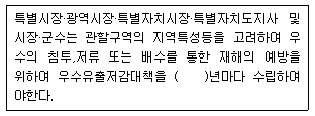
- 1
- 3
- 5
- 10
(정답률: 알수없음)
32. 자연재해대책법상 방재시설의 종류에 해당하지 않는 것은? (단, 그밖에 행정안전부장관이 고시하는 시설은 제외한다.)
- 하천법에 따른 댐
- 도로법에 따른 차도
- 소하천정비법에 따른 제방
- 재난 및 안전관리 기본법에 따른 예보∙경보시설
(정답률: 알수없음)
33. 하도내 저류방식인 저류지 계획에서 저류지 위치 결정에 관한 설명으로 틀린 것은?
- 토지이용계획 협의에서 저류지 위치결정을 위해서는 저류지 면적도 고려하여야한다.
- 규모가 큰 하천 또는 지방하천 이상의 하천에는 하도내 저류방식의 저류지 설치를 지양하여야 한다.
- 저류지 위치결정에서 본류에 저류지를 설치하는 경우 하류수위 영향은 고려하지 않아도 된다.
- 하도내 저류방식은 홍수량을 전량 유입하여 저감하는 방식으로 저류지 규모가 과대하다고 판단되는 경우 지류에 설치하는 방안도 고려할수 있다.
(정답률: 알수없음)
34. 하수도설계기준상 측정된 강우자료 분석을 통한 다음 각각의 하수도 시설물별 최소 설계빈도는?
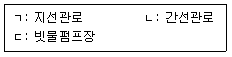
- ㄱ:5년, ㄴ:10년, ㄷ:30년
- ㄱ:5년, ㄴ:10년, ㄷ:20년
- ㄱ:10년, ㄴ:30년, ㄷ:30년
- ㄱ:10년, ㄴ:30년, ㄷ:20년
(정답률: 알수없음)
35. 항만, 어항시설의 재해취약요인과 거리가 가장 먼 것은?
- 방파제 기초 세굴
- 해안지역 지반 침하
- 배수시설 용량 부족
- 파랑에 의한 반복적 충격
(정답률: 알수없음)
36. 자연재해위험개선지구 관리지침상 자연재해위험개선지구의 유형이 아닌 것은?
- 침수위험지구
- 유실위험지구
- 고립위험지구
- 지진위험지구
(정답률: 알수없음)
37. 하천재해에 적합한 방재시설계획이 아닌 것은?
- 하천 선형변경이나 하천이설등은 원칙적으로 지양해야한다.
- 하천의 선형변경이나 하천의 이설이 있는 경우 가급적 직강화하여 유수의 소통이 원활하도록 한다.
- 하천통수능에 근본적인 문제를 지니고 있는 하천에서는 적정 하폭으로 확폭하는 방안이 필요하다.
- 하천통수능에 근본적인 문제를 지니고 있는 하천에서는 유역내 또는 하천변에 저류 공간을 확보하는 방안이 필요하다.
(정답률: 알수없음)
38. 하천재해의 피해발생 원인이 아닌 것은?
- 하천등급별 설계빈도 상이 및 하천정비 미흡
- 산지지역 토사유출에 따른 하천 통수능의 저하
- 나무 등 유송잡물이 교각에 집적됨에 따른 유사 댐 형성
- 우수관거의 통수능 부족으로 유출수의 지상 월류
(정답률: 알수없음)
39. 과거발생한 재해이력 분석을 위한 조사자료가 아닌 것은?
- 재해연보
- 수해백서
- 방재백서
- 국가재난관리정보시스템(NDMS)자료
(정답률: 알수없음)
40. 다음중 해일재해의 유형이 아닌 것은?
- 해안침식 피해
- 파랑, 월파에의한 해안시설 피해
- 토사유출 방지시설의 미비로 인한피해
- 하수가 역류 및 내수배재불량으로 인한 침수피해
(정답률: 알수없음)
3과목: 재해분석
41. 재해영향평가등의 협의 실무지침상 재해영향평가 등의 협의 관리체계에 관한 사항으로 틀린 것은?
- 발생 가능한 피해는 강제적인 규제조치를 통해 방지하는 규제적수단이다.
- 재해피해시 보상금액을 협의할수 있는 협의적 수단이다.
- 평가를 통해 승인된 계획을 통하여 개발이 완료된 이후 발생할 수 있는 천재지변에 의한 피해에 대해서는 분쟁조정과 피해배상의 부분으 포함하는 구제적 수단이다.
- 개발에 따른 홍수와 토사 유출량의 증대로 인한 하류지역 피해 및 사면불안정으로 인한 재해요인을 최소화하는 예방적 수단이다.
(정답률: 알수없음)
42. 자연재해저감종합계획 세부수립기준상 바람재해 위험지구 후보지 위험요인 분석에 관한 사항으로 틀린 것은?
- 지표풍속을 기준으로 바람재해위험지구 후보지의 풍해등급을 제시한다.
- 바람재해 위험지구 후보지 전체에 대하여 GIS기법을 이용하여 10년 빈도 지표풍속을 정량적으로 제시한다.
- 현실적으로 수립가능한 저감대책은 비구조적 저감대책위주로 제한적인 점을 고려하여 태풍 시뮬레이션이나 바람장수치모형에 의한 분석등 과도한분석을 요구하는 것은 지양되어야한다.
- 분석결과는 GIS기법등을 이용하여 극한 풍속에 미치는 지형 및 지표 거칠기의 정량적 영향을 최소 8개 풍향에대하여 분석한후 위험 지표풍속을 산출하여 결과는 GIS기법을 이용하여 위험요인지도로 표출한다.
(정답률: 알수없음)
43. 하천재해의 발생원인이 아닌 것은?
- TTP이탈
- 제방 유실
- 제방폭 협소
- 계획홍수량을 초과하는 이상호우
(정답률: 알수없음)
44. 어떤 하천유역 상류에 하천횡단 구조물을 건설하기 위하여 가물막이 시설을 설치하고자 한다. 가물막이 시설을 재현기간 30년 홍수에 견딜수 있도록 설계한다면 설치 후 10년 동안 한번도 파괴되지 않을 확률(%)은?
- 3.3
- 50.8
- 71.2
- 100.0
(정답률: 알수없음)
45. 통합방재성능평가시 방재시설의 평가지수 산정방식은?
- (방재시설 설계비)÷(홍수부담량)
- (방재시설 복구비)÷(홍수부담량)
- (방재시설 개선사업비)÷(홍수부담량)
- (방재시설 설계강우량)÷(홍수부담량)
(정답률: 알수없음)
46. 방재성능목표 달성을 위한 개선대책수립절차로 옳은 것은?
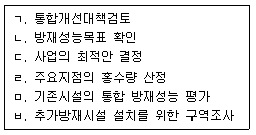
- ㄴ → ㄹ → ㅁ → ㅂ → ㄱ → ㄷ
- ㄴ → ㄹ → ㅂ → ㅁ → ㄱ → ㄷ
- ㄹ → ㄴ → ㅁ → ㅂ → ㄱ → ㄷ
- ㄹ → ㄴ → ㅂ → ㅁ → ㄱ → ㄷ
(정답률: 알수없음)
47. 지역별 방재성능목표 설정∙운영기준상 다음조건일 때 A지역의 방재성능목표 강우량(mm/h)은? (단, 지역별 방재성능목표 산정방법을 적용하며,지속기간은 1시간으로 한다.)
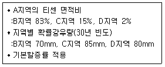
- 75.0
- 80.0
- 85.0
- 90.0
(정답률: 알수없음)
48. 재해복구사업의 분석∙평가 시행지침상 다음에서 설명하는 것은?
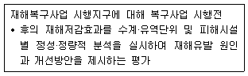
- 재해저감성 평가
- 방재성능목표평가
- 재해복구사업평가
- 재해복구사업 분석∙평가
(정답률: 알수없음)
49. 방재성능개선대책의 경제성 평가시 사업비 산정에 포함되는 것을 모두 고른 것은?
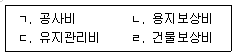
- ㄱ, ㄷ
- ㄱ, ㄴ, ㄹ
- ㄴ, ㄷ, ㄹ
- ㄱ, ㄴ, ㄷ, ㄹ
(정답률: 알수없음)
50. 방재성능 개선대책 시행계획 수립시 경제성 평가지수 산정식은?
- (정비를 하지 않는 경우 예상되는 피해금액)÷(개선대책사업비)
- (홍수∙호우로 인하여 유사지역에 발생한 피해금액)÷(개선대책사업비)
- (홍수∙호우로 인하여 유사지역에 발생한 피해금액의 평균치)÷(개선대책사업비)
- (홍수∙호우로 인하여 유사지역에 발생한 피해금액의 최고치의90%)÷(개선대책사업비)
(정답률: 알수없음)
51. 합리식에 의한 홍수유출량 산정식에 관한 사항으로 틀린 것은?
- 유출계수는 각각 다른 발생확률을 갖는 강우-유출 사상에 따라 달라진다.
- 유역 도달시간과 동일한 지속기간을 갖는 강우조건에서 최대홍수가 발생한다.
- 도달시간은 유역 내 가장 먼 지점부터 설계지점까지 물이 유입되는데 소유되는 시간이다.
- 첨두유출량의 발생확률은 주어진 도달시간에 대응하는 강우강도의 발생확률과 동일한다.
(정답률: 알수없음)
52. 자연재해저감종합계획 세부수립기준상 토사재해위험지구 예비후보지 선정기준에 관한 사항으로 틀린 것은?
- 야계지역 예비후보지:자연재해 관련 방재시설 중에서 토사재해에 해당하는 사방댐을 제외한 야계지역을 예비후보지로 선정
- 우수관거 산지접합부 예비후보지:도시 우수관망 상류단 산지접합부의 침사지등과 같은 토사 저감시설 미비로 인한 피해발생가능지역을 예비후보지로선정
- 계곡부 토석류 예비후보지:계곡부 산지하천 주변의 토석류 유출로 인한 붕괴시 영향범위내 인명피해 시설 및 기 반시설이 포함되어 있어 피해가 예상되는 지역을 예비후보지로 선정
- 토사유출 예비후보지:과거 산불 발생지역, 채석장, 고랭지 채소밭 등의 하류부에 위치하여 피해가 예상되는 주거지, 하천, 저류지, 농경지, 양식장등의 지역을 예비후보지로 선정
(정답률: 알수없음)
53. 빗물펌프장 용량부족으로 인한 침수 발생시 방재성능 향상을 위한 대책이 아닌 것은?
- 방수로 설치
- 고지배수로 설치
- 빗물펌프장 용량 증설
- 빗물펌프장과 연결된 유수지 축소
(정답률: 알수없음)
54. 재해복구사업의 분석∙평가 시행지침상 재해복구사업의 분석∙평가에 관한 사항으로 틀린 것은?
- 분석∙평가시 지역경제발전성평가를 수행하여야한다.
- 시∙군∙구청장은 복구사업관련자료를 활용하여 분석평가를 실시하여야 하며 업무대행은 불가하다.
- 분석평가결과의 적정성에 관한 사전검토 및 실무적인 자문을 위하여 시∙군 ∙구에 분석평가위원회를 둔다.
- 시∙군∙구청장은 분석평가를 완료한 경우에는 30일 이내에 특별시장, 광역시장, 도지사, 특별자치도를 거쳐 행정안전부 장관에게 최종 평가결과를 제출하여야한다.
(정답률: 알수없음)
55. 방재성능향상을 위한 개선대책 수립에 관한 사항으로 틀린 것은?
- 주민 호응도를 고려한다.
- 평가지수 높은 사업지구를 선정한다.
- 소하천정비종합계획,하수도정비기본 계획등 관련 계획을 충분히반영한다.
- 구조적 개선대책 수립이 불가능한 지역은 방재교육 실시 등의 비구조적 대책을 수립한다.
(정답률: 알수없음)
56. 방재성능 개선대책 수립시 고려하여야하는 방재시설물의 특성에 관한 설명으로 틀린 것은?
- 기능성이란 방재시설물이 재해경감에 어떠한 기능과 역할을 담당하고 있는 지를 분석∙평가하는 것이다.
- 안정성이란 재해로 인한 안전확보여부 및 재해재발방지여부를 정성적, 정량적으로 평가하는 것이다.
- 시공성이란 방재시설물에 최적화된 기획, 설계, 유지관리등에 이르기 위한 시공능력을 평가하는 것이다.
- 경제성이란 방재시설물의 붕괴시 인명∙재산등의 돌이킬 수 없는 피해가 따르므로 가능한 한 재해복구비용을 감 소시킬수 있는 정도를 평가하는 것이다.
(정답률: 알수없음)
57. 본류 외수위 상승, 내수지역 홍수량증가등으로 인한 내수배제불량으로 인명과 재산상의 손실이 발생되는 재해는?
- 하천재해
- 가뭄재해
- 내수재해
- 토사재해
(정답률: 알수없음)
58. 면적 0.54km2,유출계수 0.65인유역의 2시간동안 확률강우량 200mm를 배제 할 수 있는 배수통관의 단면적(m2)은?
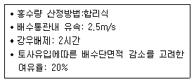
- 3.90
- 4.68
- 9.36
- 16.85
(정답률: 알수없음)
59. 재해복구사업의 분석∙평가 시행지침상 재해복구사업 분석평가를 통해 도출된 문제점에 대하여 제시되어야할 개선방안과 구체적인 활용방안이 아닌 것은?
- 재난취약계층의 안전성 향상방안
- 지역발전성과 지역주민 생활환경의 쾌적성 향상방안
- 자연재해저감 종합계획 등 관련계획∙기준등과의 연계방안
- 유역∙수계 및 배수구역의 통합방재성능 효과 향상방안
(정답률: 알수없음)
60. 하수관로의 방재성능평가 내용이 아닌 것은?
- 하수관로, 배수펌프장 및 연계 방재시설의 설계빈도 검토
- 강우-유출모의 결과를 토대로 하수관로 방재성능 평가표 작성
- 모의결과 침수 발생여부에 따라 기존 시설유지 또는 추가 설치 검토
- 기술진단을 통한 관리상태 점검 및 개선 계획 수립여부 검토
(정답률: 알수없음)
4과목: 재해대책
61. 재해지도작성기준등에 관한 지침상 홍수범람예상도 작성의 기술적 범위를 나타내는 홍수범람 시나리오 종류가 아닌 것은?
- 범람 시나리오
- 빈도규모 시나리오
- 유역조건 시나리오
- 재난복구 시나리오
(정답률: 알수없음)
62. 소하천설계기준상 소하천의 신설교량 계획시 고려해야 할 사항을 틀린 것은?
- 교량의 설치로 홍수흐름이 방해가 되지 않도록 하여야 한다.
- 교량형하고는 제방의 여유고 이상을 적용함을 원칙으로 한다.
- 소하천하도 내에는 교각을 설치하지 않는 것을 원칙으로 한다.
- 소하천 구역내에는 교대를 설치하지 않는 것을 원칙으로 한다.
(정답률: 알수없음)
63. 재해지도 작성기준등에 관한 지침상 침수흔적도 작성 절차로 옳은 것은?
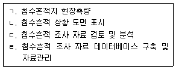
- ㄱ → ㄷ → ㄴ → ㄹ
- ㄱ → ㄷ → ㄹ → ㄴ
- ㄷ → ㄱ → ㄴ → ㄹ
- ㄷ → ㄱ → ㄹ → ㄴ
(정답률: 알수없음)
64. 자연재해대책법령상 자연재해위험개선 지구의 재해위험요인에 따른 구분에 해당되지 않는 것은?
- 토사위험지구
- 해일위험지구
- 취약방재시설지구
- 상습가뭄재해지구
(정답률: 알수없음)
65. 재해지도 작성기준등에 관한 지침상 침수예상도에 포함되어야 하는 내용이 아닌 것은?
- 시나리오
- 최대침수범위
- 강우지속기간
- 침수심 및 침수수위
(정답률: 알수없음)
66. 재해지도 작성기준등에 관한 지침상 피난활용형 재해정보지도 표준 기재항목 및 내용이 아닌 것은?
- 대피장소
- 침수예상구역
- 경보시설현황
- 대피가 필요한 지역
(정답률: 알수없음)
67. 자연재해대책법령상 ( )에 들어갈 내용으로 옳은 것은?
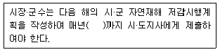
- 2월 말일
- 4월 30일
- 11월 30일
- 12월 31일
(정답률: 알수없음)
68. 자연재해대책법령상 개발사업의 부지면적이 5만제곱미터 미만이거나 개발사업의 길이가 10킬로미터 미만인 개발사업의 재해영향평가의 협의 기간은? (단, 협의기간연장에 관한 사항은 제외한다.)
- 20일
- 30일
- 40일
- 45일
(정답률: 알수없음)
69. 자연재해위험 개선지구 유형중 하천횡단교량 및 암거시설이 유수소통에 장애를 주어 당해 시설물의 직접피해 또는 주변이 주택,농경지등의 피해가 발생하는 지역은?
- 침수위험지구
- 유실위험지구
- 고립위험지구
- 붕괴위험지구
(정답률: 알수없음)
70. 토사유출량 산정시 중량단위 토사유출량은 체적단위 토사유출량으로 환산이 필요하다. 입경0.0⑤mm이상 모래의 구성비가 85%일 때 레인-쾰저(Lane & Koelzer)의 경험식을 적용하면 퇴적토의 단위중량(ton/m3)은?
- 약 0.94
- 약 1.37
- 약 1.47
- 약 1.57
(정답률: 알수없음)
71. 내구연한 50년인 하천제방의 설계에서 설계빈도를 100년으로 할 때 내구연한 동안에 하천제방이 파괴될 확률(%)은?
- 약 13.3
- 약 39.5
- 약 60.5
- 약 86.7
(정답률: 알수없음)
72. 재해지도 작성기준등에 관한 지침상 침수흔적의 표시방법 및 부착시기에 관한 설명으로 틀린 것은?
- 표찰 부착시기는 침수흔적 조사후 30일 이내에 한다.
- 표찰에는 침수년∙월∙일 및 침수위(EL.m),침수심(m)등을 기재한다.
- 표찰은 산화(녹)될 우려가 없는 재질을 사용하여야 한다.
- 침수흔적을 영구적으로 표시∙관리할 수 있도록 건물 및 주요 침수지역에 표찰형태로 부착한다.
(정답률: 알수없음)
73. 확률강우량이 150mm이고, 강우지속기간이 180분일 경우 강우강도(mm/h)는?
- 50
- 60
- 70
- 80
(정답률: 알수없음)
74. 재해지도 작성 기준등에 관한 지침상 재해 지도 작성에 관한 사항으로 ( )에 알맞은 기준은?
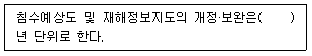
- 5
- 10
- 15
- 20
(정답률: 알수없음)
75. 소하천설계기준상 소하천 조사항목중 유역특성 조사항목에 해당하지 않는 것은?
- 시설물
- 유역형상
- 하천형태
- 토질 및 토양
(정답률: 알수없음)
76. 재해지도 작성 기준등에 관한 지침상 ‘침수’에 해당하지 않는 것은?
- 도심 및 농어촌의 주거∙상업∙산업단지의 대상지역이 0.3m이상이 침수될 경우
- 농경지 지역의 침수심은 벼 등의 높이 등을 감안하여 0.5m이상이 침수될 경우
- 원예시설 농경지는 침수에 취약하여 침수심이 0.2m이상이면서 12시간 이상 침수된 경우
- 지하상가등과 같은 지하공간으로 침수 높이를 별도로 정하지 않고 침수로 인해 불편을 야기 할 경우
(정답률: 알수없음)
77. 자연재해대책법령상 우수유출저감시설 종류중 침투시설을 모두고른 것은?
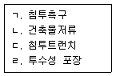
- ㄱ, ㄴ
- ㄴ, ㄷ, ㄹ
- ㄱ, ㄷ, ㄹ
- ㄱ, ㄴ, ㄷ, ㄹ
(정답률: 알수없음)
78. 자연재해대책법령상 비상대처계획에 포함 되어야하는 사항이 아닌 것은? (단, 그 밖에 사항은 제외한다.)
- 경보체계
- 비상대피계획
- 비상시 응급행동 요령
- 댐 및 저수지 붕괴 위험성 평가
(정답률: 알수없음)
79. 우수유출저감시설 중 지역 내(on-site) 저류시설의 종류가 아닌 것은?
- 공원저류
- 주차장저류
- 운동장저류
- 하수도 간선저류
(정답률: 알수없음)
80. 자연재해저감 종합계획 세부수립기준 상 전지역 단위 저감대책 중 비구조적 저감대책이 아닌 것은?
- 재해지도 작성
- 댐 운영 체계 개선
- 임시 침사지 겸 저류지 설치
- 재난 예보∙경보 종합계획 구축
(정답률: 알수없음)
5과목: 방재사업
81. 자연재해위험개선지구 관리지침상 붕괴위험지구의 편익분석에 관한 사항으로 ( )에 알맞은 내용은?
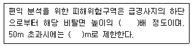
- ㄱ:2, ㄴ:50
- ㄱ:2, ㄴ:70
- ㄱ:3, ㄴ:50
- ㄱ:3, ㄴ:70
(정답률: 알수없음)
82. 방재시설의 결함에 따른 보수,보강공법에 관한 사항으로 틀린 것은?
- 누수 - 그라우팅
- 사면의활동 - 차수막 공법
- 콘크리트의 동해와 열화에 의한 부삭 - 표층부 교체
- 콘크리트 균열과 철근 부식 - Sealing 재주입
(정답률: 알수없음)
83. 자연재해위험개선지구 관리지침상 최종 투자우선순위 선정시 고려되는 부가적 평가항목이 아닌 것은?
- 지속성
- 효율성
- 정책성
- 준비도
(정답률: 알수없음)
84. 다음중 피해주기와 홍수빈도율에 대한 설명으로 옳은 것을 모두 고른 것은?
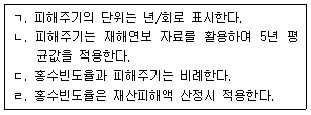
- ㄱ, ㄴ
- ㄷ, ㄹ
- ㄱ, ㄹ
- ㄴ, ㄷ
(정답률: 알수없음)
85. 도시∙군계획시설의 결정∙구조 및 설치기준에 관한 규칙상 방풍설비로 방풍림시설을 설치하지 않는 것은?
- 대규모 구역을 대상으로하는 방풍설비
- 해안에 접한지역에 설치하는 방풍설비
- 독립된 단위시설을 대상으로 설치하는 방풍설비
- 연안침식이 심각하거나 우려되는 지역 및 방재지구
(정답률: 알수없음)
86. 자연재해저감 종합계획 세부수립기준상 다음에서 설명하는 용어는?
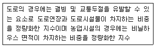
- 설해취약지수
- 설해최고조위
- 설해위험일수
- 설해위험요인지수
(정답률: 알수없음)
87. 우수유출저감대책 수립시 펌프설비 설계의 고려사항으로 틀린 것은?
- 펌프는 효율을 고려하여 가능한 소용량의 것으로 한다.
- 펌프는 가능한 최고 효율점 부근에서 운전하도록 대수와 용량을 결정한다.
- 펌프의 설치대수는 유지관리가 편리하도록 가능한 대수를 적게 하고 동일 용량으로 한다.
- 안전하고 확실하게 운전이 가능하고 특히 조작이나 취급이 용이해야 한다.
(정답률: 알수없음)
88. 방재시설의 유지∙관리 평가항목∙기준 및 평가방법 등에 관한 고시상 행정안전부장관이 재난책임기관장의 유지관리를 평가해야 하는 방재시설이 아닌 것은?
- 소하천시설 중 수문
- 도로시설 중 공동구
- 어항시설 중 물양장
- 하천시설 중 관측시설
(정답률: 알수없음)
89. 우리나라의 지형적 특성에 따른 연안침식 유형이 아닌 것은?
- 이상파랑
- 토사포락
- 호안붕괴
- 백사장 침식
(정답률: 알수없음)
90. 경제성평가 지표 중 모든 타당한 경제적 자료를 단일 계산화하여 평가나 순위매김이 가능하도록 한 방법은? (문제 오류로 가답안 발표시 2번이 답안으로 발표되었으나, 확정답안 발표시 전항 정답 처리 되었습니다. 여기서는 가답안인 2번을 누르면 정답 처리 됩니다.)
- 내부수익률(IRR)
- 순현재가치(NPV)
- 순평균수익률(NARR)
- 편익∙비용비(B/C ratio)
(정답률: 알수없음)
91. 하천제방 복구 시 확보해야 되는 다짐는?
- 50%이상
- 70%이상
- 80%이상
- 90%이상
(정답률: 알수없음)
92. 제방에서 제체 누수가 발생했을 경우의 대책으로 틀린 것은?
- 제방에 배수로 설치
- 제체내 차수벽 설치
- 앞비탈면 불투수 피복처리
- 제내 비탈면 보강(압성토)
(정답률: 알수없음)
93. 다음중 연평균 유지관리비에 관한 내용으로 틀린 것은?
- 간편법의 연평균 유지관리비는 연평균 사업비의 0.5%이다.
- 간편법의 연평균 유지관리비는 (연평균사업비-잔존가치) × 0.2%이다.
- 개선법의 연평균 유지관리비는 총 사업비의 0.5%이다.
- 개선법의 연평균 유지관리븐 (총 사업비 - 잔존가치) × 2%이다.
(정답률: 알수없음)
94. 시설물의 안전 및 유지관리에 관한 특별법령상 각 안전등급의 정밀안전진단 실시 시기로 옳은 것은?
- A등급: 3년에 1회이상
- B등급: 4년에 1회이상
- C등급: 5년에 1회이상
- D등급: 6년에 1회이상
(정답률: 알수없음)
95. 사면보강공법 중 저항력 증가법이 아닌 것은?
- 앵커공법
- 네일공법
- 압성토공법
- 억지말뚝공법
(정답률: 알수없음)
96. 사방댐을 설치하기에 가장적합한위치는?
- 상류 계류바닥의 물매가 급한곳
- 상하류 계곡 폭의 변화가 없는곳
- 계상의 양단에 퇴적암이 있는지역
- 상류부의 계폭이 넓고 경사가 완만한 지역
(정답률: 알수없음)
97. 자연재해대책법령상 상습가뭄재해지역에 대한 생활수∙먹는물 분야의 중장기 대책에 포함되어야하는 사항을 모두 고른 것은?
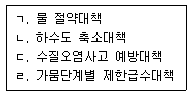
- ㄱ, ㄴ ,ㄷ
- ㄱ, ㄴ, ㄹ
- ㄱ, ㄷ, ㄹ
- ㄴ, ㄷ, ㄹ
(정답률: 알수없음)
98. 자연재해위험개선지구 관리지침상 다차원법의 농작물 피해액 산정에 필요한 요인이 아닌 것은?
- 침수심
- 매몰지역(m2)
- 농작물자산가치(원)
- 침수시간별 피해율(%)
(정답률: 알수없음)
99. 소규모 개발사업의 우수유출저감시설 계획에서 개발에 따른 불투수면적이 12000m2이 증가되었다 개발에 따른 유출량(m3)은?
- 120
- 600
- 1200
- 6000
(정답률: 알수없음)
100. 사방사업법령상 사방시설의 점검에 관한 사항으로 ( )에 알맞은 기준은?
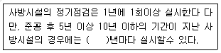
- 1
- 2
- 3
- 5
(정답률: 알수없음)